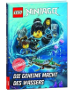

Die Krafte von Nya, die das Wasser beherrscht, spielen verruckt. Sie uberflutet ein Dorf, lasst Klospulungen zerplatzen und sogar das Spinjitzu-Kloster ist nicht vor ihren Wassermassen sicher. Nyas Mutter eilt zu Hilfe und gibt ihrer Tochter ungewollte, aber gutgemeinte Ratschlage. Um der Sache auf den Grund zu gehen, begeben sich die Ninja mit einem U-Boot in die Tiefen des Ozeans, wo viele Gefahren auf sie warten. Weiterer Band der Lego-Ninjago-Reihe (zuletzt s. "Im Dschungel der Gefahren") im ublichen Stil, bei der Nya im Mittelpunkt steht. Reihenublich mit teils halbseitigen bunten, sehr aussagekraftigen Bildern und einem Glossar am Ende ausgestattet. Die Geschichte endet abrupt, sodass der nachste Band der Serie wohl den Faden der Story aufnehmen wird.